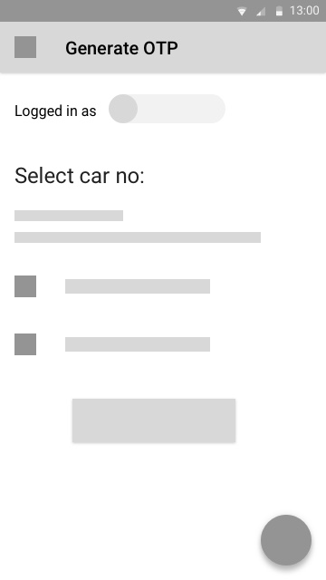
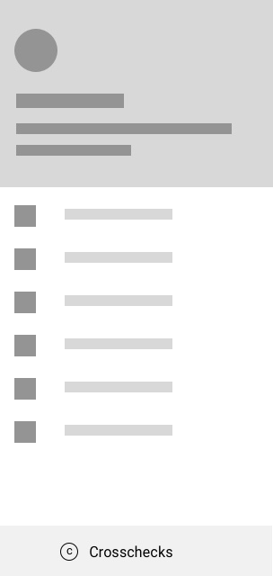
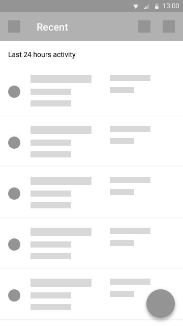
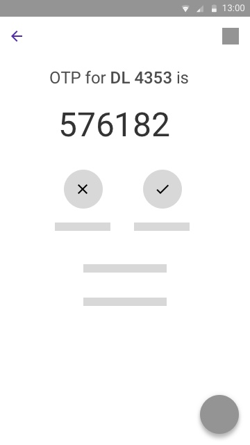

Keeping your vehicles secure with Crosschecks
Crosschecks
Jul 2018 - Nov 2018
Crosschecks is an application that attempts to curb the car theft crimes in New Delhi. The application offers 3 different interfaces for Guards, for securing the housing societies in Delhi, Police Officials, attempting to solve car theft cases and catching car thieves and the Users, who upload details about their vehicles that help the guards and the police identify their vehicles and contact owners in case of an emergency.
The Problem
The Problem
The gated colonies in Delhi has a long history of vehicle thefts. Most of the thefts take place at night. Crosschecks aims to solve this problem by allowing the colonies to verify every vehicle that checks out of a colony at night with the help of a OTP sent to the list of owners. In case the owners of the vehicles are not verified, the closest police station is informed of the theft.
Analysing Potential Competitors
Competitive Analysis for Crosschecks
When we were building the Crosschecks app, car safety apps hand't taken off in India yet, however the OTP usage patterns in India were something to learn from.
Due to slow mobile networks, an OTP might be received on a delay. An OTP message might get lost easily due to high number of spam messages received on certain networks. Allow the user to resend OTPs multiple times and clearly mention both the OTP and car number for which the OTP is being generated.
Our Target Users
Understanding our users
Based on our thorough user research, our app needed to work well on low end android devices, our target users for the Guard app did. Although, the security guards were not very literate, they were well versed with the usage of the OTP process since they had experience of using a lot of banking apps which use OTP as well. A lot of guards suffer from low visibility.
Initial Wireframing
Wireframes
Based on our thorough user research, our app needed to work well on low end android devices, our target users for the Guard app did Although, the security guards were not very literate, they were well versed with OTP process since they had experience of using a lot of banking apps which use OTP as well. A lot of guards suffer from low visibility.




Wireframes for Crosschecks app
Other Screens
Some initial sketching
Some sketches we developed early in the process for each of the applications. These cover the UX and the flow of the applications briefly.
Wireframes for Crosschecks app
The App Itself
How the app works
Crosschecks is designed to prevent the theft of vehicles from housing societies in New Delhi. These societies are particularly vulnerable during night. The App is designed for Guards, Car Owners and Police Officials. The Guards use the app to ensure that the vehicles leaving and arriving at the society are of valid owners. They generate an OTP for that particular car and then match that with the OTP received by the driver. If the OTP is not matched, the Guard contacts the vehicle owner and verifies the identity of the driver. In case of a failure, the Guard can inform the nearest Police Station for a vehicle theft.


Crosschecks app
The Guard App
The Guard App
The Guard App is geared towards the confirming the owner of the vehicle by generating the OTP and matching it with the OTP received by the vehicle owner. In case that fails, the guard calls one of the owners of the vehicles through the app.


Crosschecks Guards app
The Police App
The Police App
The Police officials use the app to get a dynamic list of all the vehicles reported stolen in their designated zone. With a list of details about the vehicles stolen, the officials can perform a check on any suspicious vehicle they find, much like guards. They also generate an OTP and confirm it with the driver of the vehicle. If the OTP is not matched, the police official establish contact with the designated police station. The list is dynamic and updates with each theft reported. Color is a key component for the officials to track and identify a vehicle in the real world. The color code for a vehicle on the app is matched with the exact color of a particular model. Using typographical heirarchy, the vehicle name is made easy to scan.


Crosschecks Police app
The User App
The User App
The vehicle owner is requested to upload their vehicle details on the app and keep them updated. The owner also uploads the details of the his/her family on the app. Every member of a family is assumed as an owner of all the vehicles of the family. When an OTP is generated by a guard or a police official, the same OTP is sent to the owners of the vehicle.


Crosschecks Resident app
Confirm Widget
Confirm Widget
The most critical component of the Guard and the Police App was the Confirm-Reject widget. This widget indicates the most crucial action of confirming or rejecting the owner of the vehicles by the guards and police officials. We used traditional colors for indicating a confirm and reject action. The colors differ in saturation as well as brightness enabling people with color blindness to easily differentiate between them. The text label alongside it ensures that people with disabilities understand the action associated with the buttons.
While designing the icon for alert action, we decided to use the a tilted alert icon alongside the default call icon on android to ensure that the overall message is still neutral. This ensures that the icon does not have a negative outlook either.
The Dark Theme
Designing the app for use at night
As most of the vehicle thefts take place during the night, and therefore the workload for the security guards increases significantly during the night it was natural to have a night theme for the app. This was especially important for the app meant for the guards as most of the workers are old aged and have lower vision than most of the people.
The Dark Mode